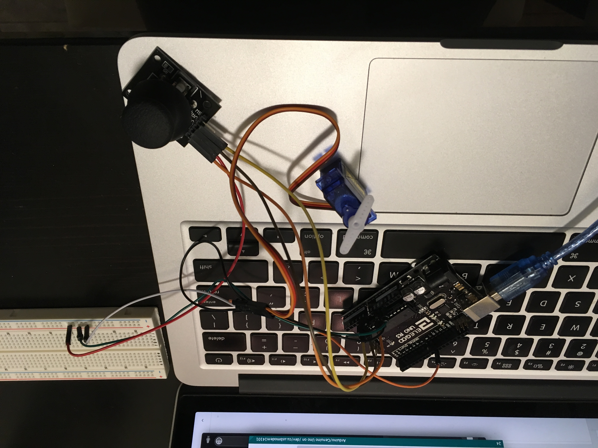
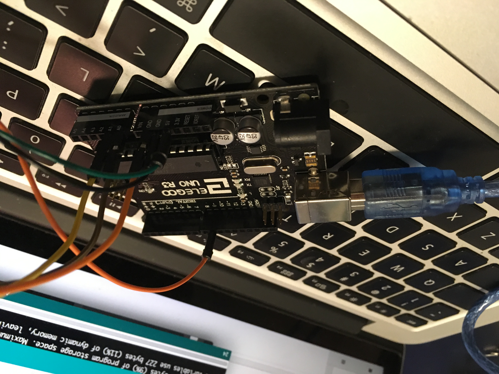
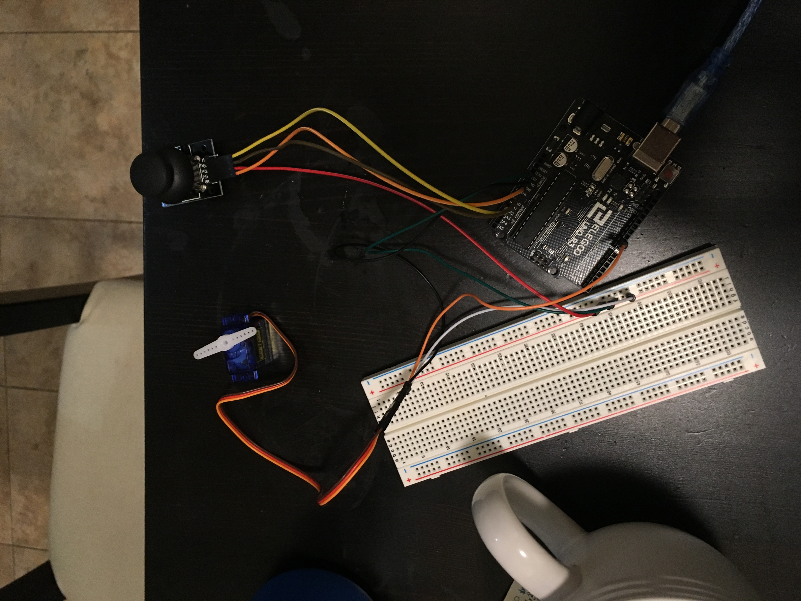
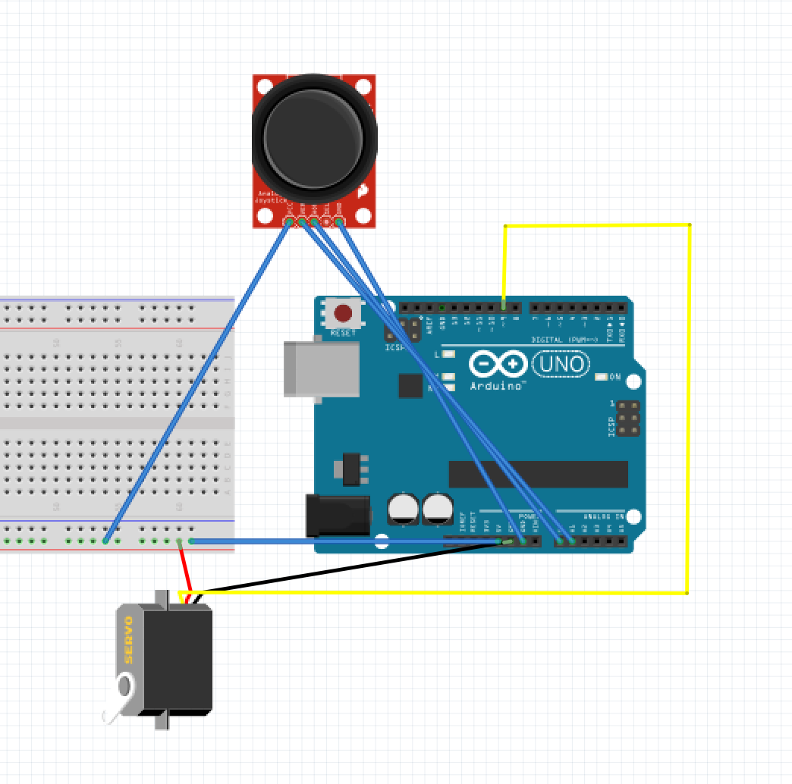
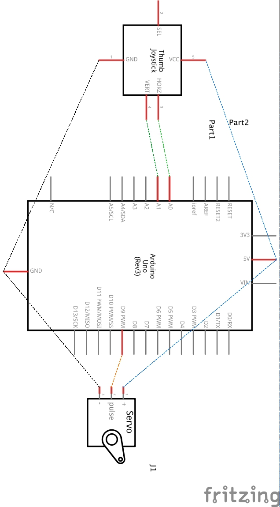

Rachel Ren's Assignment 5!






Above are images and a schematic of the circuit. Here is all the code documentation for Assignment 5:
// initialize the X value as 0
int xValue = 0;
// initialize the Y value as 0
int yValue = 0;
// sets servoPin at pin 9
const int servoPin = 9;
// sets joystick X at A0 pin
const int joystickX = A0;
// sets joystick Y at A1 pin
const int joystickY = A1;
#include
// create a servo object
Servo myServo;
void setup() {
// initializes serial communication at 9600 bps
Serial.begin(9600);
// attaches the servo on servoPin to the servo object
myServo.attach(servoPin);
}
void loop() {
// reads joystick X value from input pin
xValue = analogRead(joystickX);
// reads joystick Y value from input pin
yValue = analogRead(joystickY);
// determines how the servo motor will turn
if (xValue == 0 && yValue < 500) {
// if the joystick is facing down, the motor will spin 90 degrees
myServo.write(90);
} else if (xValue > 400 && yValue > 500) {
// if the joystick is facing left, the motor spins 180 degrees
myServo.write(180);
} else if (xValue > 600 && yValue < 600) {
// if the joystick is facing up, the motor will spin up at 0 degrees
myServo.write(0);
}
// wait for the servo to get there
delay(15);
}